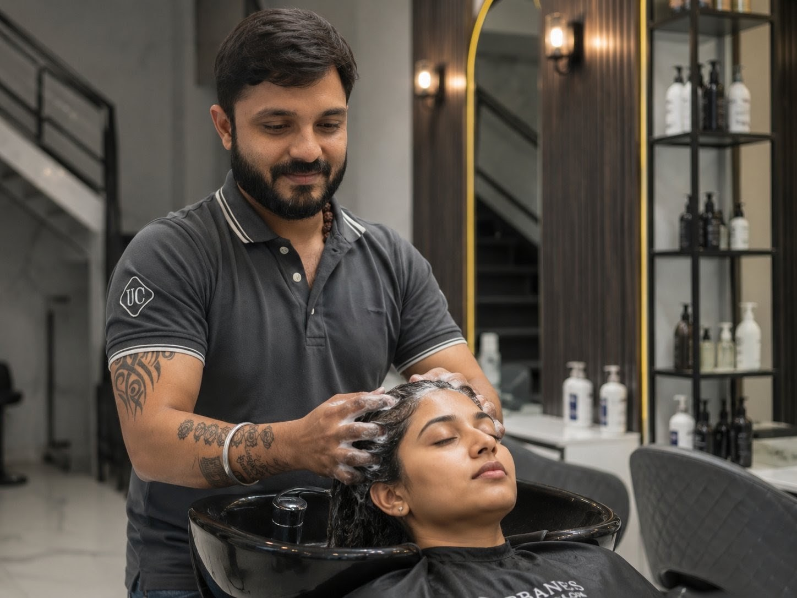

Premium Massage Therapy
Relax & Unwind with Massage Therapy at Urban Cuts
From a quick head and shoulder release to a full body massage, our therapists work out everyday tension with the right pressure and technique for you — in a calm, unhurried setting.

Service Overview
Massage That Actually Fits Your Day
Some days call for a quick reset — ten minutes on tight shoulders before you head back to work. Other days you want the time to properly switch off. Our massage menu covers both ends of that, plus everything in between.
Head & Shoulder Massage is available separately for men and women so each session is matched to your comfort and preference, alongside dedicated Back, Foot and Full Body Massage options for a more complete release.
Our Massage Menu
Choose Your Massage
From a quick head and shoulder release to a full body massage, here's the complete range of massage services offered at Urban Cuts.
-
Head & Shoulder Massage - Male
A focused massage to release tension in the head, neck and shoulders.
-
Head & Shoulder Massage - Female
A focused massage to release tension in the head, neck and shoulders.
-
Back Massage
Targeted massage to ease tension along the back and upper body.
-
Foot Massage
A relaxing massage to relieve tired, achy feet.
-
Full Body Massage
A complete massage covering the whole body for total relaxation.
The Benefits
Why Regular Massage Matters
-
Stress Relief
A proper massage helps you switch off from a busy day.
-
Better Circulation
Massage helps improve blood flow to tired muscles.
-
Muscle Tension Relief
Trained therapists work out tightness in the neck, back and shoulders.
-
Better Sleep & Relaxation
A calmer nervous system often means better rest afterward.
Who It's For
Who Is This Service For?
-
Desk Workers & Tech Professionals
Head & Shoulder Massage for neck and upper back tension from long hours at a screen.
-
Post-Travel Fatigue
Foot Massage or Back Massage to recover after a long journey.
-
Chronic Tension & Stress
Regular sessions to keep everyday tension from building up.
-
Full Reset Seekers
Full Body Massage for a complete, unhurried relaxation session.
How It Works
Our Massage Process
-
01
Consultation
We check in on problem areas, pressure preference and time available.
-
02
Comfortable Setup
A calm, private setup so you can properly relax from the start.
-
03
Massage Therapy
Your chosen massage, performed with attention to tension points.
-
04
Pressure Check-Ins
Your therapist checks pressure throughout so it stays comfortable.
-
05
Relax & Finish
A few quiet minutes to let your body settle before you head out.
Trusted By Baner
Why Choose Urban Cuts for Massage
- Certified massage therapists across every service
- Pressure and technique tailored to your comfort
- Separate Head & Shoulder options for men and women
- Calm, relaxing environment away from the main salon floor
- Hygienic linens and tools for every session
- Consistently rated 5.0 across 141+ Google reviews
Have Questions?
Massage FAQs
Why do you offer separate Head & Shoulder Massage services for men and women?
We offer separate Head & Shoulder Massage services for men and women so each session can be matched with a therapist and technique suited to your comfort and preference.
How long does a massage session typically take?
Head & Shoulder or Foot Massage typically takes 20 to 30 minutes, Back Massage around 30 to 40 minutes, and Full Body Massage 60 to 75 minutes.
What oils or products are used during the massage?
We use quality massage oils and products suited to relaxation and muscle relief — let your therapist know about any allergies or preferences beforehand.
Is massage suitable for back pain or muscle soreness?
Our Back Massage and Full Body Massage can help ease general muscle tension and soreness. For medical back conditions, please consult a doctor before booking.
Can I request a specific pressure level during my massage?
Yes, our therapists check in on pressure throughout the session — let them know at any point if you'd like it lighter or firmer.
How often should I get a massage?
For general stress relief, once every 2 to 4 weeks works well for most people, though it depends on your lifestyle and how much tension you're carrying.
Ready to Unwind?
Book your massage appointment today and experience Baner's most premium family salon.
Visit Us
Find Urban Cuts in Baner
Shop 10, Nancy Hill View,Baner Annex, Baner,
Pune, Maharashtra 411045
Phone: 88620 70100
Business Hours
- Monday - Sunday10:00 AM - 9:30PM